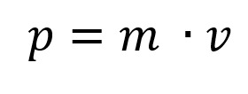
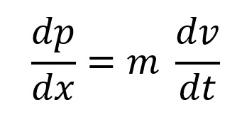
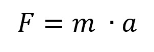
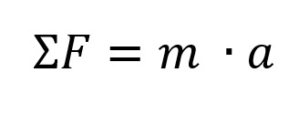
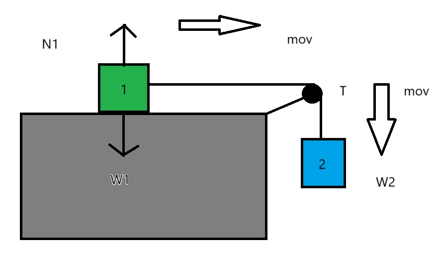
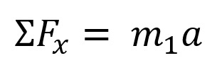
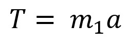
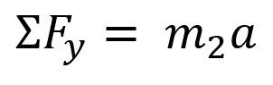
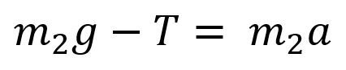
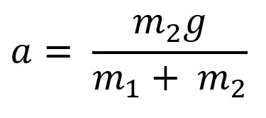

Definiciones
Primera Ley de Newton: Establece que un objeto en reposo permanecerá en reposo y un objeto en movimiento continuará moviéndose a una velocidad constante en línea recta, a menos que una fuerza externa actúe sobre él. En otras palabras, la inercia es la tendencia de los objetos a resistir cambios en su estado de movimiento.
Segunda Ley de Newton: Esta ley afirma que la aceleración de un objeto es directamente proporcional a la fuerza neta que actúa sobre él e inversamente proporcional a su masa. Se expresa matemáticamente como: F = m x a (Fuerza es igual a masa por aceleración).
Tercera Ley de Newton: Establece que para cada acción hay una reacción de igual magnitud y en sentido opuesto. En otras palabras, si un objeto A ejerce una fuerza sobre un objeto B, el objeto B ejerce una fuerza de igual magnitud pero en dirección opuesta sobre el objeto A. Esta ley explica la interacción entre dos cuerpos y cómo responden a las fuerzas que se ejercen entre ellos.
Fuerza de Fricción: La fuerza de fricción es una fuerza que se opone al movimiento relativo entre dos superficies en contacto. Existen dos tipos principales de fricción:
- Fricción estática: La que impide que un objeto comience a moverse.
- Fricción cinética: La que actúa sobre un objeto en movimiento.
Fuerza Centrípetra: La fuerza centrípeta es la fuerza que mantiene a un objeto en movimiento a lo largo de una trayectoria circular. Esta fuerza actúa hacia el centro de la trayectoria circular y es esencial para que el objeto siga moviéndose en una curva.
Ejemplos cotidianos

Primera Ley de Newton
Imagina que estás en un automóvil que está detenido en un semáforo. Cuando el semáforo se pone en verde y el coche comienza a moverse, tú sientes que te empujas hacia atrás en el asiento. Esto sucede porque tu cuerpo tiende a permanecer en reposo (inercia) mientras el coche se acelera hacia adelante.
Segunda Ley de Newton
Supongamos que estás empujando un carrito de supermercado. Si empujas con una fuerza pequeña, el carrito se mueve lentamente. Si empujas con una fuerza mayor, el carrito se mueve más rápido. Esto es porque la aceleración del carrito es directamente proporcional a la fuerza que aplicas y está inversamente proporcional a la masa del carrito.

Tercera Ley de Newton
Cuando saltas desde una plataforma, empujas hacia abajo con tus pies. Como resultado, la plataforma empuja hacia arriba con una fuerza igual y opuesta, lo que te permite elevarte en el aire. Esta es la acción y la reacción en acción: tu fuerza hacia abajo y la fuerza de reacción hacia arriba de la plataforma.
Fuerza de Fricción
Cuando intentas deslizar una caja pesada sobre el suelo, sientes resistencia. Esta resistencia es la fuerza de fricción que se opone al movimiento de la caja. La fricción entre la base de la caja y el suelo actúa para detener el deslizamiento. Si la superficie es rugosa, la fricción será mayor y la caja será más difícil de mover.
Matemáticas en la Ley de Fuerza
El movimiento lineal de una partícula está dado por:
Para velocidades bajas no comparables con la velocidad de la luz podemos derivar manteniendo constante la masa.

En un sistema con aglunas fuerzas:
En el sistema con superficie lisa se puede encontrar la aceleración del sistema.
Por lo tanto, se puede asumir que:





Esta fórmula corresponde a la aceleración de un sistema de dos masas conectadas por una cuerda en una polea ideal, un problema comúnmente tratado en el tema de dinámica y la Ley de la Fuerza (segunda ley de Newton).
Punto clave
Supongamos que tenemos tres objetos con diferentes masas y queremos mostrar cómo la fuerza varía cuando se aplica una aceleración constante de 2 m/s².
- ¿Qué hace este ejemplo?
- Datos: Calcula la fuerza usando la fórmula F = m * a (Fuerza = Masa × Aceleración), donde se aplica una aceleración de 2 m/s² a tres objetos de masas 2 kg, 5 kg y 10 kg.
- Gráfica de Barras: Muestra cómo la fuerza varía para cada objeto según su masa. Cada barra representa la fuerza en Newtons que se aplica a cada masa.
- Resultado
- Se obtiene una gráfica interactiva en la que se puede visualizar de manera sencilla la relación entre masa y fuerza, un concepto clave de la Segunda Ley de Newton.
Complementos
Si te ha quedado dudas sobre sobre las Colisiones Elásticas, puedes observar los siguientes videos: